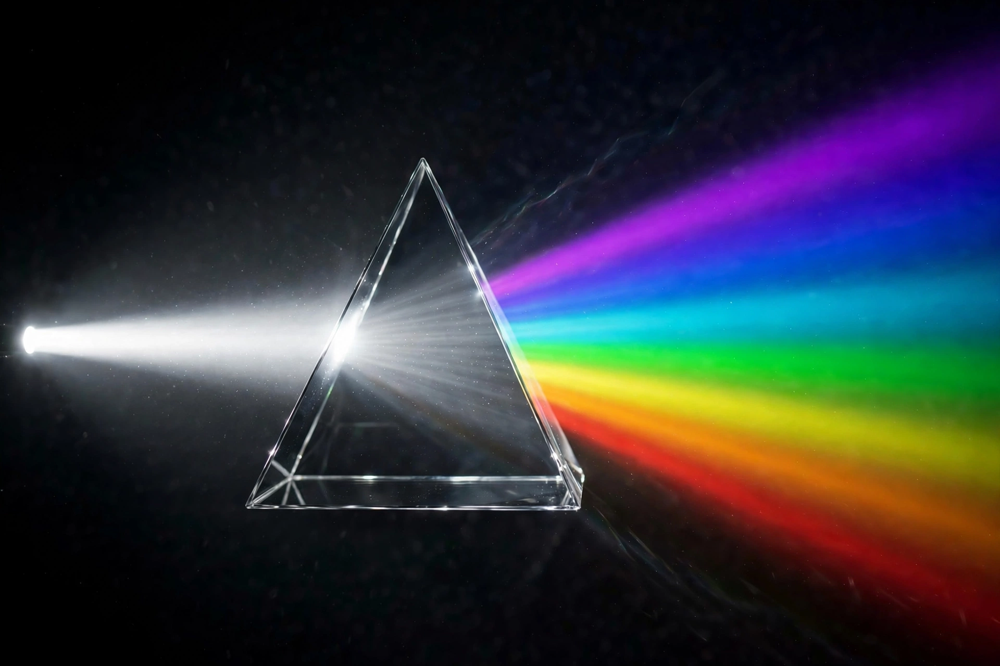

| Colour perception | |
|---|---|
 | |
| System | Visual system |
| Mechanism | Differential responses of cone photoreceptors, processed by opponent channels |
| Typical human range | Visible spectrum, approx. 380–750 nm |
Colour perception is the ability of an organism to distinguish objects based on the wavelengths (or frequencies) of the light they reflect, emit or transmit. It is a component of the broader visual perception, and in humans it arises from the differential excitation of three classes of cone photoreceptor cells in the retina, which respond preferentially to short (blue), medium (green) and long (red) wavelengths of light.
Colour vision begins in the retina, where cone cells containing different photopigments (opsins) absorb light across the visible spectrum. The nervous system compares the outputs of the cone classes: differences between long- and medium-wavelength cone signals underlie red–green discrimination, while a combination compared against short-wavelength ("blue") cone signals underlies blue–yellow discrimination. This two-stage account reconciles the trichromatic theory of Young and Helmholtz with the opponent-process theory of Ewald Hering: colour is encoded trichromatically at the receptors and recoded into opponent channels (red–green, blue–yellow and black–white) in retinal ganglion cells and the lateral geniculate nucleus on the way to the visual cortex.
Colour perception is not a simple readout of wavelength. The visual system compensates for changes in illumination (colour constancy), and identical spectral inputs can be perceived differently depending on context, as exploited in optical illusions. Perceived colour can be described by attributes such as hue, saturation and lightness, formalised in colour spaces such as the CIE 1931 system.
Most humans are trichromats, but about 8% of men and 0.5% of women have colour vision deficiency ("colour blindness"), most commonly red–green deficiency caused by altered opsin genes on the X chromosome. Rare individuals are dichromats or monochromats, and some women may be functional tetrachromats. Across the animal kingdom, colour vision varies widely: many mammals are dichromats; most birds, reptiles, fish and insects are tetrachromats, often seeing into the ultraviolet; and mantis shrimp possess a dozen or more spectral channels. Bees are trichromats shifted toward the ultraviolet and cannot see red.
Infants develop colour discrimination over the first months of life. Languages differ in how they partition the colour spectrum into named categories: research by Berlin and Kay suggested a broadly universal order in which basic colour terms emerge in languages, though the degree to which language shapes perception itself (the linguistic relativity debate) remains contested. Classic studies of speakers of languages with few colour terms, such as the Dani of New Guinea, and of Russian speakers — whose language obligatorily distinguishes light blue (goluboy) from dark blue (siniy) — have informed this debate.